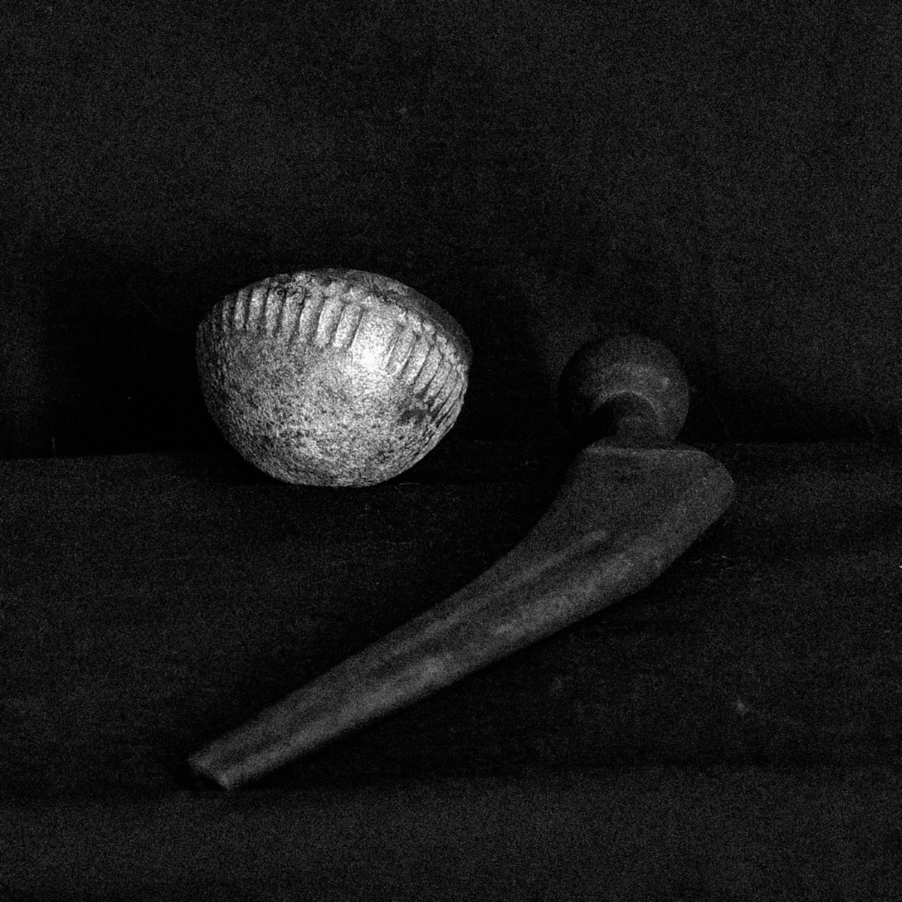

Jack A. Driscoll
Producer, Mix & Mastering Engineer

Ball & Socket
Elijah Minnelli
2026 10" EP - Accidental Meetings- Mastering
“Elijah Minnelli returns to Accidental Meetings, following stand out records for FatCat Records, ZamZam & his own BCC imprint, which have garnered support and AOTY charts from The Guardian, The Quietus and The Wire to mention a few.
Minnelli has a unique dub-wise take, fusing eastern & western folk influences with cumbia and earthy drones, cumulating in his own distinct sonic world and his ever evolving lore. Within Ball & Socket, Minnelli pushes his own vocals to the forefront for the first time, compared to the more accustomed background approach previously. The record also sees a collaboration with Osaka’s Kiki Hitomi (Waqwaq Kingdom, ex King Midas Sound) on Unkind, the two intertwining throughout. Fans of the pairing will be happy when it gets a re-up halfway through on the Discomix.
Ball & Socket is a personal record on many a level for Minnelli, and the result ends up as one of his most beautiful body of works yet. It finds it’s home on the Bristol imprint Accidental Meetings, four years after his first outing on the label.”
“Sees a folk influence return via a sumptuous version of ‘Low Country’… the EP also sees him lean into his own singing, a spooky falsetto that I find really appealing.”
The Quietus
“A song-based set… demonstrating Minnelli’s ongoing musical development and increased confidence.”
Ban Ban Ton Ton
“A fragile, melancholy duet… a slow, sad, bottom heavy skank.”
Ban Ban Ton Ton
“One of his most beautiful body of works yet… a personal record on many a level.”
Phonica Records